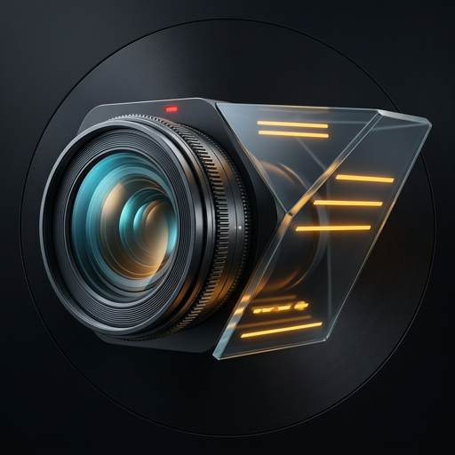

$5.99 One-Time · Zero Cloud · iOS 27.1+
CueBridge
Eye-contact cover teleprompter & director camera studio for iPhone Duo, iPhone, and iPad.
Dual-Screen Director & Presenter Workflow
- 48 MP Cover Teleprompter: Unfold iPhone Duo in Studio mode to drive high-contrast cue lines on the 5.4" outer cover right beside the rear lens while watching live framing, dB headroom, and AE/AF lock on the inner screen.
- Solo-Vlogger Tabletop (~95°–130°): Frame yourself on the inner ultra-wide camera above the crease with eye-line prompts cleared from dynamic camera occlusions and large Record, Section, and Best Take ★ pads cleanly below the 40 pt fold zone.
- Book Script Editor & Take Vault: Color-coded
[pause],[pause 2s],[es],*emphasis*, and§ Sectionmarkup paired across the fold with local H.264 MP4 take playback, starring, Photos export, and Share Sheet. - 100% Offline Speech-Follow: Optional on-device speech recognition advances cue lines as you speak alongside 3-second Breathing Rhythm pre-roll and closed-cover one-hand script drafts with exact-line resume continuity.